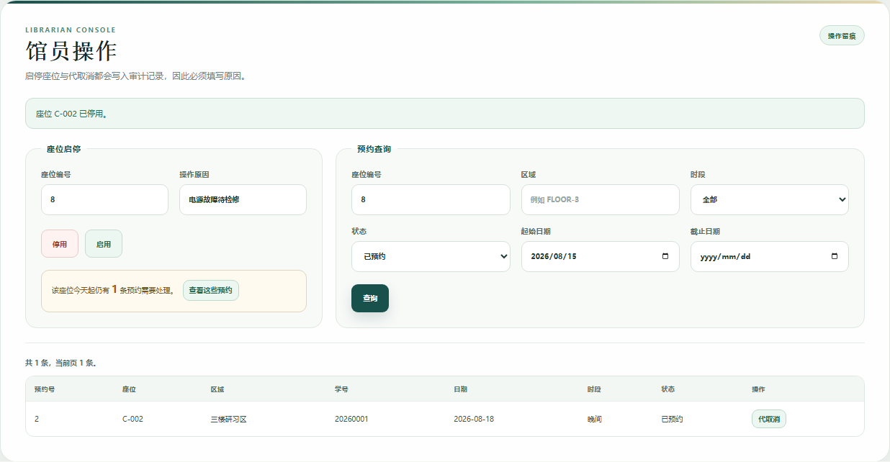

01 Projects
我做过什么
不是 GitHub 仓库的列表，而是我真正做过的东西。每个项目都按同一个结构来写：是什么、为什么做、难在哪、怎么设计、为什么这样设计、怎么验证、学到了什么。

In Progress
GroundedAgent
电商售后智能 Agent，从工具调用到幂等执行、人工审批与崩溃恢复。
In Progress
Enterprise AI Practice
企业合同管理与 AI 工作流实践，记录跨系统集成、法务知识沉淀和质量评估。

Completed
Campus Library
校园座位预约系统，探索并发竞争、事务与数据库一致性。
Completed
Agent Ticket Platform
只自动处理一个闭环的工单 Agent：不可变审批、暂停恢复与可靠投递。
Planned
FlashOrder
正在规划的高并发订单系统，重点研究库存扣减、超卖防护、幂等、消息队列与性能优化。